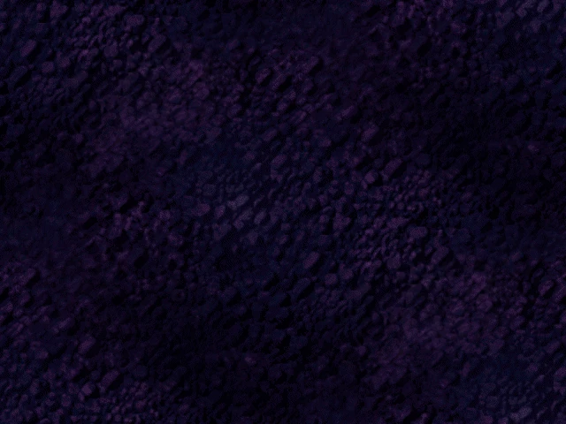
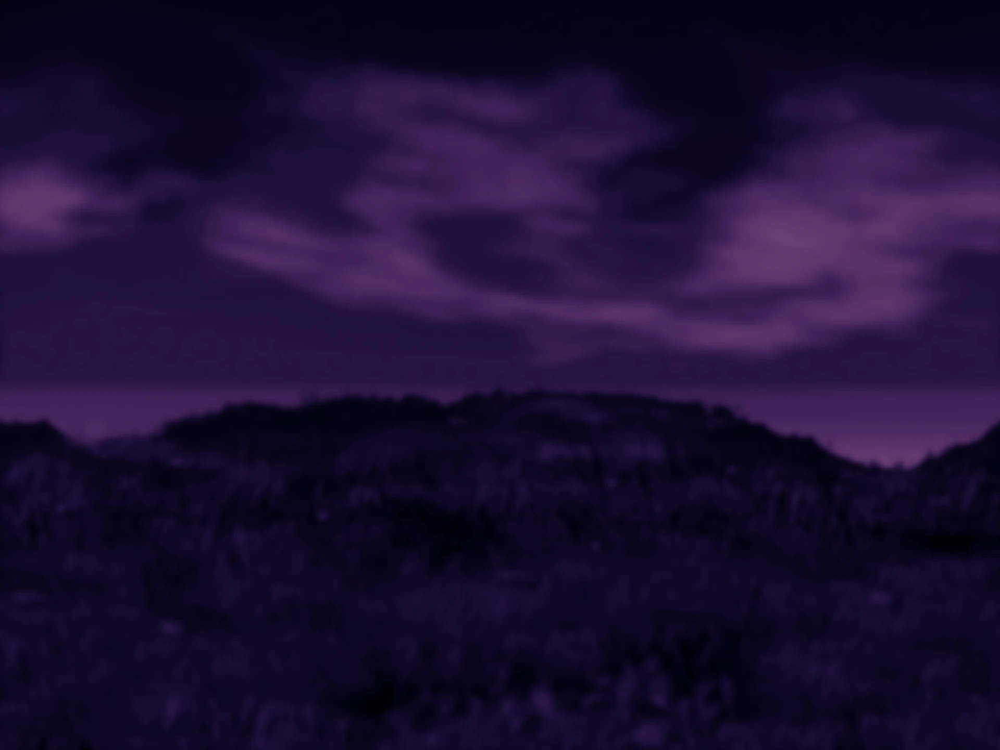
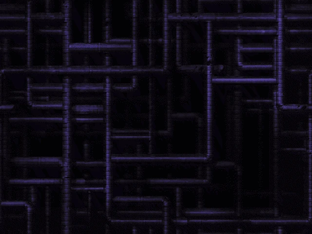

Welcome! This website is dedicated to the various content I have created for Pekka Kana 2.
Take a look around and enjoy your stay!



What is Pekka Kana 2?
Pekka Kana 2 is a classic platformer game made by Janne Kivilahti, first released in 2003. Original game offers two built-in episodes - Rooster Island 1 and Rooster Island 2. Since the beggining, the game supported customization and creation of fan-made episodes. Over the years, countless tools, assets and episodes were created by dedicated fans. Game engine itself was greatly modified as well, increasing compatibility with modern systems and adding new, useful features.
Fan-made episodes
Episodes description
Fan-made assets
So far I've made only one asset pack and it's available for download here, but I intend to create much more after getting into Lua scripting (Greta Engine exclusive). It's also worth noting that I'm completely fine with using my original assets for other episodes, just credit me somewhere ;)
Other
There are few PK2-related things I've made that don't fit in any of the above categories. Those might not be generally useful for anyone, but feel free to take a look at them here.